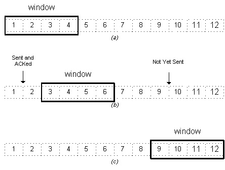

Computer Networks
Prev|
Next|
Index
Data Link Layer
What is DLL(Data Link Layer)
The Data Link Layer is the second layer in the OSI model, above the Physical Layer, which ensures that
the error free data is transferred between the adjacent nodes in the network. It breaks the datagrams passed down
by above layers and convert them into frames ready for transfer. This is called Framing. It provides two main functionalities
- Reliable data transfer service between two peer network layers
- Flow Control mechanism which regulates the flow of frames such that data congestion
is not there at slow receivers due to fast senders.
What is Framing?
Since the physical layer merely accepts and transmits a stream of bits without any
regard to meaning or structure, it is upto the data link layer to create and recognize
frame boundaries. This can be accomplished by attaching special bit patterns to the beginning and
end of the frame. If these bit patterns can accidentally occur in data, special care must be taken
to make sure these patterns are not incorrectly interpreted as frame delimiters.
The four framing methods that are widely used are
- Character count
- Starting and ending characters, with character stuffing
- Starting and ending flags, with bit stuffing
- Physical layer coding violations
Character Count
This method uses a field in the header to specify the number of characters in the frame.
When the data link layer at the destination sees the character count,it knows how
many characters follow, and hence where the end of the frame is. The disadvantage is
that if the count is garbled by a transmission error, the destination will lose
synchronization and will be unable to locate the start of the next frame. So, this
method is rarely used.
Character stuffing
In the second method, each frame starts with the ASCII character sequence
DLE STX and ends with the sequence DLE ETX.(where DLE is Data Link Escape,
STX is Start of TeXt and ETX is End of TeXt.) This method overcomes the
drawbacks of the character count method. If the destination ever loses synchronization,
it only has to look for DLE STX and DLE ETX characters. If however, binary data is
being transmitted then there exists a possibility of the characters DLE STX and DLE
ETX occurring in the data. Since this can interfere with the framing, a technique called
character stuffing is used. The sender's data link layer inserts an ASCII DLE character
just before the DLE character in the data. The receiver's data link layer removes this
DLE before this data is given to the network layer. However character stuffing is
closely associated with 8-bit characters and this is a major hurdle in transmitting
arbitrary sized characters.
Bit stuffing
The third method allows data frames to contain an arbitrary number of bits
and allows character codes with an arbitrary number of bits per character. At
the start and end of each frame is a flag byte consisting of the special
bit pattern 01111110 . Whenever the sender's data link layer encounters five
consecutive 1s in the data, it automatically stuffs a zero bit into the outgoing
bit stream. This technique is called bit stuffing. When the receiver sees five
consecutive 1s in the incoming data stream, followed by a zero bit, it automatically
destuffs the 0 bit. The boundary between two frames can be determined by
locating the flag pattern.
Physical layer coding violations
The final framing method is physical layer coding violations and is applicable
to networks in which the encoding on the physical medium contains some redundancy.
In such cases normally, a 1 bit is a high-low pair and a 0 bit is a low-high pair. The
combinations of low-low and high-high which are not used for data may be used for marking
frame boundaries.
Error Control
The bit stream transmitted by the physical layer is not guaranteed to be error free.
The data link layer is responsible for error detection and correction. The most common
error control method is to compute and append some form of a checksum to each outgoing frame
at the sender's data link layer and to recompute the checksum and verify it with the received
checksum at the receiver's side. If both of them match, then the frame is correctly received; else
it is erroneous. The checksums may be of two types:
# Error detecting : Receiver can only detect the error in the frame and inform the sender about it.
# Error detecting and correcting : The receiver can not only detect the error but also correct it.
Examples of Error Detecting methods:
- Parity bit:
Simple example of error detection technique is parity bit. The parity bit is chosen that the number
of 1 bits in the code word is either even( for even parity) or odd (for odd parity). For example
when 10110101 is transmitted then for even parity an 1 will be appended to the data and for odd
parity a 0 will be appended. This scheme can detect only single bits. So if two or more bits are
changed then that can not be detected.
-
Longitudinal Redundancy Checksum:
Longitudinal Redundancy Checksum is an error detecting scheme which overcomes the problem of two erroneous bits.
In this conceptof parity bit is used but with slightly more intelligence. With each byte we send one
parity bit then send one additional byte which have the parity corresponding to the each bit position
of the sent bytes. So the parity bit is set in both horizontal and vertical direction. If one bit get
flipped we can tell which row and column have error then we find the intersection of the two and determine
the erroneous bit. If 2 bits are in error and they are in the different column and row then they can be
detected. If the error are in the same column then the row will differentiate and vice versa. Parity can
detect the only odd number of errors. If they are even and distributed in a fashion that in all direction
then LRC may not be able to find the error.
-
Cyclic Redundancy Checksum (CRC):
We have an n-bit message. The sender adds a k-bit Frame Check Sequence (FCS) to this message before sending.
The resulting (n+k) bit message is divisible by some (k+1) bit number. The receiver divides the message ((n+k)-bit)
by the same (k+1)-bit number and if there is no remainder, assumes that there was no error. How do we choose this
number?
For example, if k=12 then 1000000000000 (13-bit number) can be chosen, but this is a pretty crappy choice.
Because it will result in a zero remainder for all (n+k) bit messages with the last 12 bits zero. Thus, any
bits flipping beyond the last 12 go undetected. If k=12, and we take 1110001000110 as the 13-bit number
(incidentally, in decimal representation this turns out to be 7238). This will be unable to detect errors only
if the corrupt message and original message have a difference of a multiple of 7238. The probablilty of this
is low, much lower than the probability that anything beyond the last 12-bits flips.
In practice, this number is chosen after analyzing common network transmission errors and then selecting a
number which is likely to detect these common errors.
How to detect source errors?
In order ensure that the frames are delivered correctly, the receiver should inform the sender
about incoming frames using positive or negative acknowledgements. On the sender's side the
receipt of a positive acknowledgement implies that the frame has arrived at the destination safely
while the receipt of a negative acknowledgement means that an error has occurred in the frame and
it needs to be retransmitted. However, this scheme is too simplistic because if a noise burst causes
the frame to vanish completely, the receiver will not respond at all and the sender would hang forever
waiting for an acknowledgement. To overcome this drawback, timers are introduced into the data link layer.
When the sender transmits a frame it also simultaneously starts a timer. The timer is set to go off
after a interval long enough for the frame to reach the destination, be processed there, and have the
acknowledgement propogate back to the sender. If the frame is received correctly the positive acknowledgment
arrives before the timer runs out and so the timer is canceled. If however either the frame or the
acknowledgement is lost the timer will go off and the sender may retransmit the frame. Since multiple
transmission of frames can cause the receiver to accept the same frame and pass it to the network layer more than once,
sequence numbers are generally assigned to the outgoing frames.
The types of acknowledgements that are sent can be classified as follows:
- Cumulative acknowledgements: A single acknowledgement informing the sender that all the frames upto a certain number have been received.
- Selective acknowledgements: Acknowledgement for a particular frame.
They may be also classified as:
- Individual acknowledgements: Individual acknowledgement for each frame.
- Group acknowledgements: A bit-map that specifies the acknowledgements of a range of frame numbers.
Flow Control
Consider a situation in which the sender transmits frames faster than the receiver can accept them.
If the sender keeps pumping out frames at high rate, at some point the receiver will be completely
swamped and will start losing some frames. This problem may be solved by introducing flow control.
Most flow control protocols contain a feedback mechanism to inform the sender when it should transmit
the next frame.
Mechanisms For Flow Control:
- Stop and Wait Protocol:
This is the simplest file control protocol in which the sender transmits a frame and then waits for an acknowledgement,
either positive or negative, from the receiver before proceeding. If a positive acknowledgement is received, the sender
transmits the next packet; else it retransmits the same frame.
However, this protocol has one major flaw in it. If a packet or an acknowledgement is completely destroyed in transit
due to a noise burst, a deadlock will occur because the sender cannot proceed until it receives an acknowledgement.
This problem may be solved using timers on the sender's side. When the frame is transmitted, the timer is set. If
there is no response from the receiver within a certain time interval, the timer goes off and the frame may be
retransmitted.
- Sliding Window Protocols:
Inspite of the use of timers, the stop and wait protocol still suffers from a few drawbacks. Firstly,
if the receiver had the capacity to accept more than one frame, its resources are being underutilized.
Secondly, if the receiver was busy and did not wish to receive any more packets, it may delay the acknowledgement.
However, the timer on the sender's side may go off and cause an unnecessary retransmission. These drawbacks are
overcome by the sliding window protocols.
In sliding window protocols the sender's data link layer maintains a 'sending window' which consists of a set
of sequence numbers corresponding to the frames it is permitted to send. Similarly, the receiver maintains a
'receiving window' corresponding to the set of frames it is permitted to accept. The window size is dependent on
the retransmission policy and it may differ in values for the receiver's and the sender's window.
The sequence numbers within the sender's window represent the frames sent but as yet not acknowledged. Whenever
a new packet arrives from the network layer, the upper edge of the window is advanced by one. When an acknowledgement
arrives from the receiver the lower edge is advanced by one.
The receiver's window corresponds to the frames that the receiver's data link layer may accept. When a frame
with sequence number equal to the lower edge of the window is received, it is passed to the network layer,
an acknowledgement is generated and the window is rotated by one. If however, a frame falling outside the
window is received, the receiver's data link layer has two options. It may either discard this frame and all
subsequent frames until the desired frame is received or it may accept these frames and buffer them until
the appropriate frame is received and then pass the frames to the network layer in sequence.
In this simple example, there is a 4-byte sliding window. Moving from left to right, the window "slides" as bytes
in the stream are sent and acknowledged.
Most sliding window protocols also employ ARQ ( Automatic Repeat reQuest ) mechanism. In ARQ, the sender
waits for a positive acknowledgement before proceeding to the next frame. If no acknowledgement is received
within a certain time interval it retransmits the frame. ARQ is of two types :
- Go Back 'n': If a frame is lost or received in error, the receiver may simply discard all subsequent frames,
sending no acknowledgments for the discarded frames. In this case the receive window is of size 1. Since no
acknowledgements are being received the sender's window will fill up, the sender will eventually time out and
retransmit all the unacknowledged frames in order starting from the damaged or lost frame.
The maximum window size for this protocol can be obtained as follows. Assume that the window size of the sender is n.
So the window will initially contain the frames with sequence numbers from 0 to (w-1). Consider that the sender
transmits all these frames and the receiver's data link layer receives all of them correctly. However, the sender's
data link layer does not receive any acknowledgements as all of them are lost. So the sender will retransmit all the
frames after its timer goes off. However the receiver window has already advanced to w. Hence to avoid overlap ,
the sum of the two windows should be less than the sequence number space.
w-1 + 1 < Sequence Number Space
i.e., w < Sequence Number Space
Maximum Window Size = Sequence Number Space - 1
- Selective Repeat:In this protocol rather than discard all the subsequent frames following a damaged or
lost frame, the receiver's data link layer simply stores them in buffers. When the sender does not receive an
acknowledgement for the first frame it's timer goes off after a certain time interval and it retransmits only the
lost frame. Assuming error - free transmission this time, the sender's data link layer will have a sequence of a
many correct frames which it can hand over to the network layer. Thus there is less overhead in retransmission
than in the case of Go Back n protocol.
In case of selective repeat protocol the window size may be calculated as follows. Assume that the size of
both the sender's and the receiver's window is w. So initially both of them contain the values 0 to (w-1). Consider
that sender's data link layer transmits all the w frames, the receiver's data link layer receives them correctly and
sends acknowledgements for each of them. However, all the acknowledgemnets are lost and the sender does not advance
it's window. The receiver window at this point contains the values w to (2w-1). To avoid overlap when the sender's
data link layer retransmits, we must have the sum of these two windows less than sequence number space. Hence, we get
the condition
Maximum Window Size = Sequence Number Space / 2
Image References:
- http://condor.depaul.edu/~jkristof/technotes/sliding-window.jpg
- http://www.eas.asu.edu/trace/eee459_sp02/applet/archana/gupta5463.html
back to top
Prev| Next |
Index